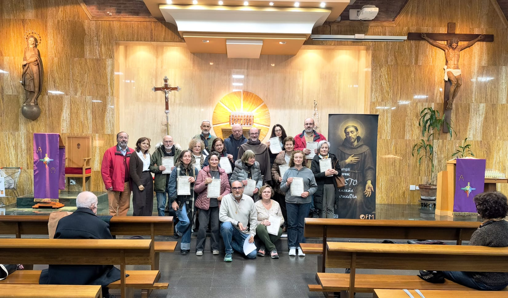

:
Greccio: un Belén para ti
—
GRECCIO · NAVIDAD
Escribe una carta a alguien que quieras. Viajará hasta Greccio, donde San Francisco hizo el primer Belén, y le llegará por WhatsApp.
Sellando tu carta…
EN CAMINO
CARTA LISTA
Ahora envíasela. Al abrir el enlace, la verá abrirse y leerá las palabras de Francisco.
Enviar por WhatsAppGRECCIO · NAVIDAD 2026
En la Nochebuena de 1223, San Francisco hizo en Greccio el primer Belén. Hoy su luz llega a tu casa a través de la Parroquia de Santa Casilda.
Sube el volumen · con música
GRECCIO · NOCHEBUENA DE 1223

DESDE GRECCIO
Con sonido · 1 minuto
:
Greccio: un Belén para ti
—
Querido amigo, querida amiga:
— Parroquia de Santa Casilda
Feliz Navidad
Te esperamos
Esta carta ha llegado desde Greccio para ti.
Ahora reenvíala a quien quieras.
Frescos de Giotto · Basílica de San Francisco, Asís